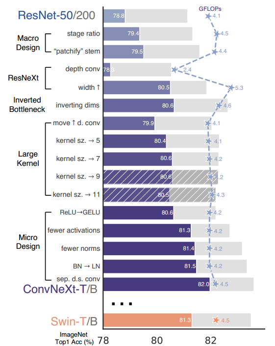
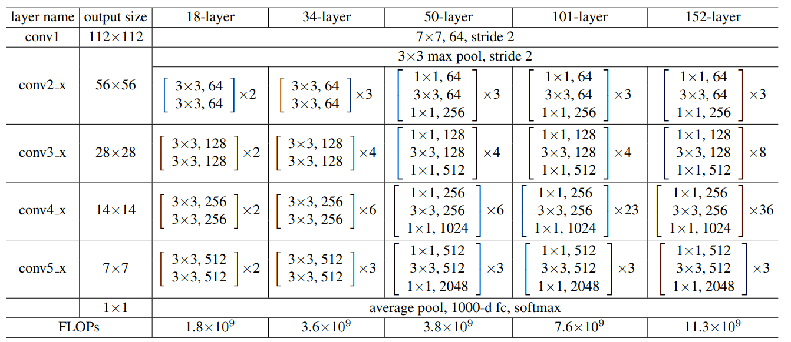
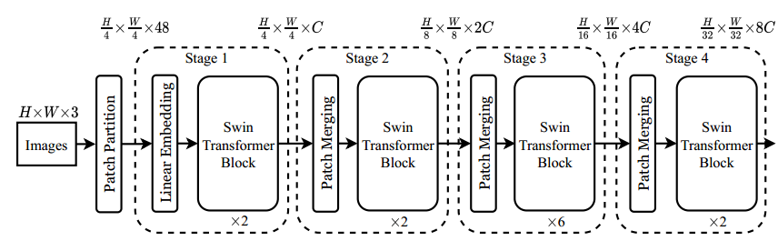
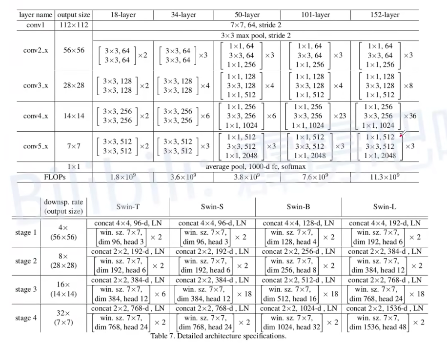
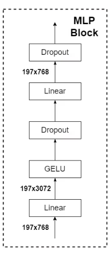
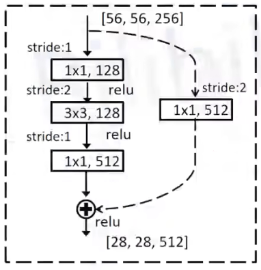
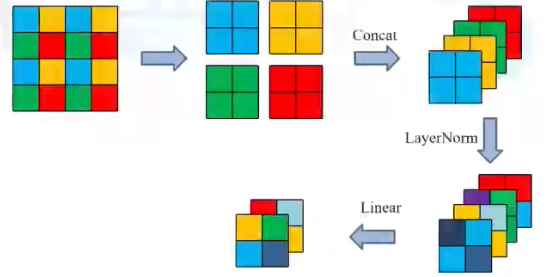
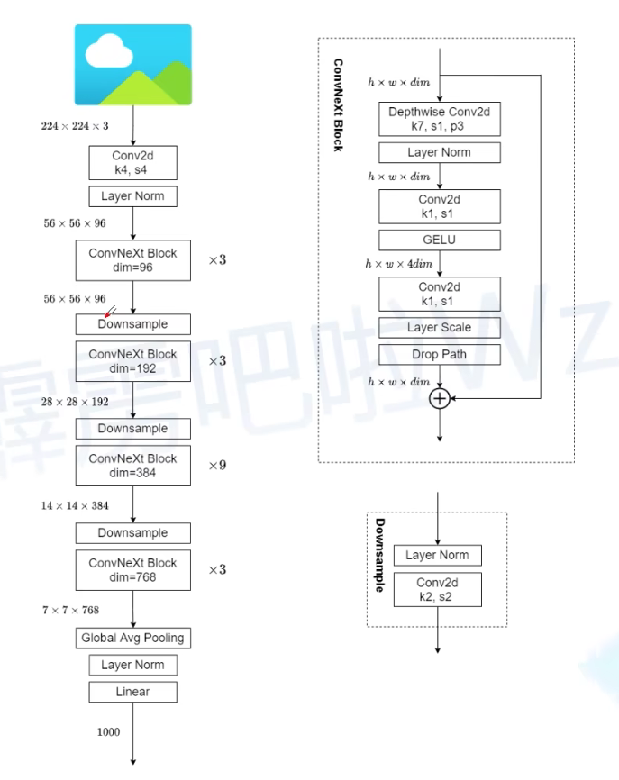
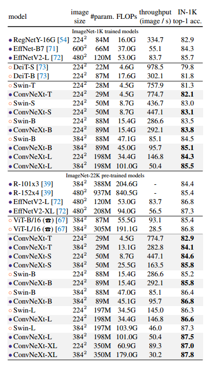
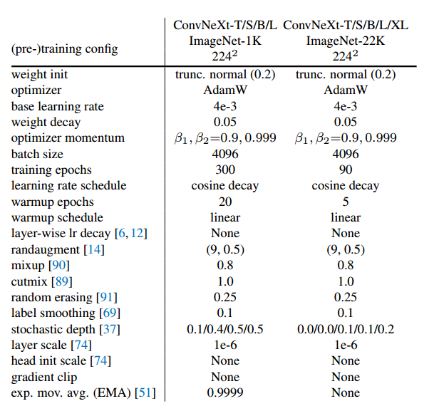

本篇博客是对ConvNeXt论文的学习笔记，内容摘自b站博主霹雳吧啦Wz，更详细的内容推荐大家去看博主的视频与CSDN博客。（逮着一只羊毛薅~）
Swin-Transformer论文：A ConvNet for the 2020s
代码地址：ConvNeXt-github
视频地址：ConvNeXt网络讲解
ConvNeXt技巧
ConvNeXt论文是作者向Swin-Transformer网络靠齐的过程，基于卷积网络设计，但在模型结构、训练技巧上与Swin-Transformer十分类似。总的来说，ConvNeXt基于ResNet进行设计，我们在下面分别介绍论文中提出的各种trick~从下图可以看出，原始的ResNet50在数据集上的准确率为78.8%。
Marco Design
Marco Design介绍的是作者在网络总体结构上做出的一些变化。
stage ratio
我们首先看看ResNet的网络组成。以ResNet50为例，我们可以看到网络模块的比例是3：4：6：3，其中每一层的特征图大小不会改变，层与层之间进行特征图的下采样处理。
我们再看看Swin-Transformer的网络结构，可以看出，网络模块的比例为2：2：6：2，归一化后是1：1：3：1。
因此，作者根据Swin-Transformer的网络结构比例，修改了自己网络的比例，将模块的比例变成了3：3：9：3。通过这样调整，模型的准确率提高到了79.4%。
“Patchify stem”
这里的Patchify stem指的是网络最初下采样的方式，在原始的ResNet中，使用的是卷积核大小7x7，步长为2，输出通道数为64的卷积核和3x3大小、步长为2的最大池化层实现的，将输入特征图变为原来的1/4。但在Swin-Transformer中，最初的下采样通过Patch Partition+Linear Embedding实现，具体方法是采用卷积核大小4x4、步长为4的卷积层实现。作者借鉴了Swin-Transformer的这种下采样方式，通过这种改进，将准确率提高到79.5%。
ResNeXt
depth conv
原始的ResNetBlock结构如下图所示。使用到了三个卷积块与一个跳连接组成，其中两端为1x1卷积，中间为3x3卷积。

而在ResNeXt中，将3x3卷积替换成了组卷积，组卷积就是对特征图的每一个通道都只是用一个卷积核进行处理，可以大大减小模型的参数，在ResNeXt论文中，作者认为这种组卷积结构可以平衡FLOPS和Accuracy，如下图所示。下图可以看出，将图像分为了256/4=64组。

在本篇论文中，将所有ResNetBlock中间的3x3卷积都替换为了组卷积，并将组数设置为了通道数。通过这个操作，准确率降低为78.3，但运算量也降低到了2.4GFLOPS。
increasing width
相比ResNet，Swin-Transformer中各模块输出的通道数都较高，如下图所示。比如以ResNet50与Swin-B之间进行比较，ResNet在第一次下采样输出的通道数为64，而Swin-B第一次输出的通道数为96。
因此，作者扩大ResNet的输出通道数，让其与Swin-Transformer的输出通道数一致，通过这种方法，模型的准确率提升到了80.5%。
inverting dims
在Swin-Transformer中，MLP模块的网络结构如下图所示。从下图可以看出，MLP先使用Linear将输入特征图的通道数变为原来的4倍，然后最后的Linear再将特征图复原为原始通道数。
作者认为，MLP模块非常想MobileNetV2中的Inverted Bottleneck模块，即两头粗，中间细，作者将这种结果用在了ConvNeXt的结构中，如下图所示。可以看出，修改后的模块结构如图b所示。

通过上图这种修改方式，在较小的模型上准确率由80.5%提升到了80.6%；在较大的模型上准确率由81.9%提升到了82.6%。
Large Kernel
move up D.Conv
在Swin-Transformer Block中，MSA模块被放在了MLP层之前，作者认为在ResNetBlock中的分组卷积在作用上与MSA模块类似，因此将分组卷积移动到了最上面，同时保持图b那种中间粗、两头细的网络结构，如下图所示。

通过上述调整，模型的准确率从80.6%降低到了79.9%，但是参数量从4.6%减小到了4.1%。
increasing kernel size
作者对分层卷积的卷积核进行调整，通过扩大分层卷积卷积核的大小，并观察结果，如下图所示。

从下图可以看出，当卷积核大小扩大到7x7时，在数据集的准确率与网络参数可以达到一个较好的平衡，当卷积核大小进一步扩大时，模型的效果反而下降了。通过上述改进，模型的准确率由79.9%提升到了80.6%。
Micro Design
这里主要介绍一些细节模块的调整与改进。

ReLU—>GeLU
在传统图像领域，深度网络通常都是用ReLU激活函数，而在Swin-Transformer中，使用到了GeLU激活函数，作者将这种激活函数的改变应用到了ConNeXt中，将ReLU激活函数替换为ReLU激活函数，通过这种调整，网络的性能保持80.6%不变。
fewer activations
在ResNetBlock中，每一个卷积层之后都接了激活函数，而在Swin-Transformer Block中，激活函数的数量较少，因此，作者在ConvNeXtBlock中使用到了更少的激活函数。通过这种调整，模型的准确率由80.6%提升到了81.3%。
fewer norms
与激活函数一样，作者减少了归一化层的数量，原本的ResNetBlock中，每个卷积层后都接上了Batch Normalization，在Swin-TransformerBlock中，LN的数量较少。作者根据Swin-TransformerBlock的结构，减少了ConvNeXtBlock中Norm的数量。通过这种调整，模型的准确率由81.4%提升到了81.5%。
separate downsampling layers
在ResNetBlock中，作者进行下采样的方式如下图所示。可以看出，在网络正常分支，使用卷积核大小3x3、步长为2的卷积进行下采样；在分支结构中，使用卷积核大小1x1，步长为2的卷积进行下采样，最后将这两个分支的结果进行融合，实现特征图的下采样。
在Swin-TransformerBlock中，使用了Patch Merging方式进行下采样，如下图所示。
依据Swin-TransformerBlock中的下采样方式，ConvNeXt使用卷积核大小2x2，步长为2的卷积，和LN层进行特征图下采样，如下图所示。

通过上述调整，模型的准确率从81.5%提高到了82.0%，高于Swin-Transformer的81.3%。
ConvNeXt网络结构
通过上述提到的一系列技巧，我们最后看看ConvNeXt-T的网络结构。
在ConvNeXtBlock中，我们可以观察到模块最后有一个Layer Scale的结构，这个结构其实类似于SeNet的思想，不过比SeNet更加简单，对于HxWxC的特征图，Layer Scale阶段会生成一组1x1xC的可学习向量，在Layer Scale阶段直接将1x1xC的向量与HxWxC的向量相乘即可。
实验
我们最后简单看看ConvNeXt的相关实验。下图可以看出，无论是在ImageNet-1K还是ImageNet-22K数据集上进行训练，ConvNeXt的效果都是最好的。
下图表明的是ConvNeXt的超参数配置。
总结
ConvNeXt虽然没有提出十分有创新性的网络结构、训练方法，但通过大量的实验，证明了卷积还存在的巨大的潜力，等待着我们的探索~